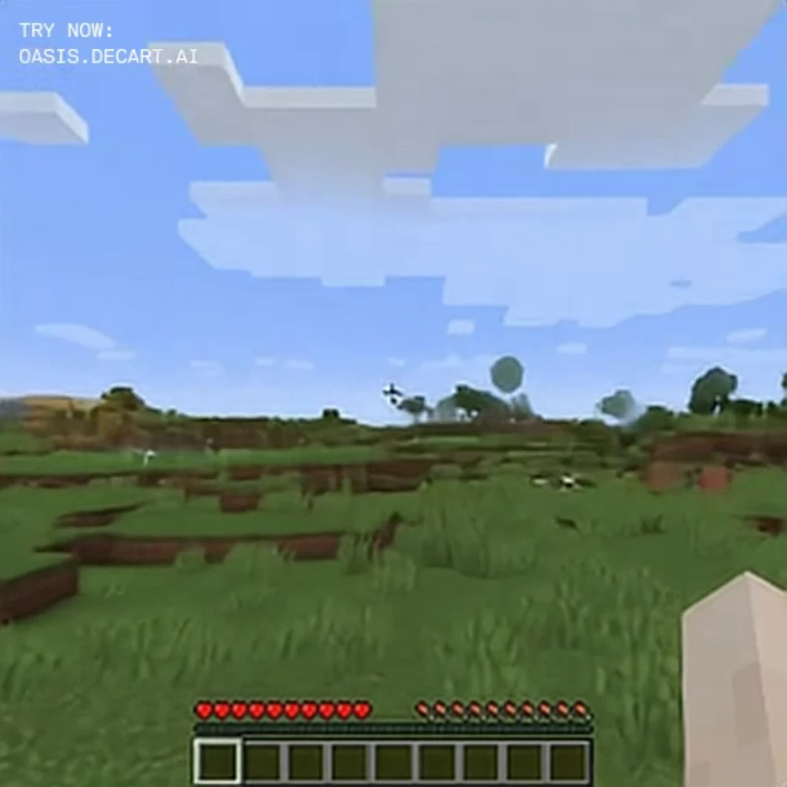
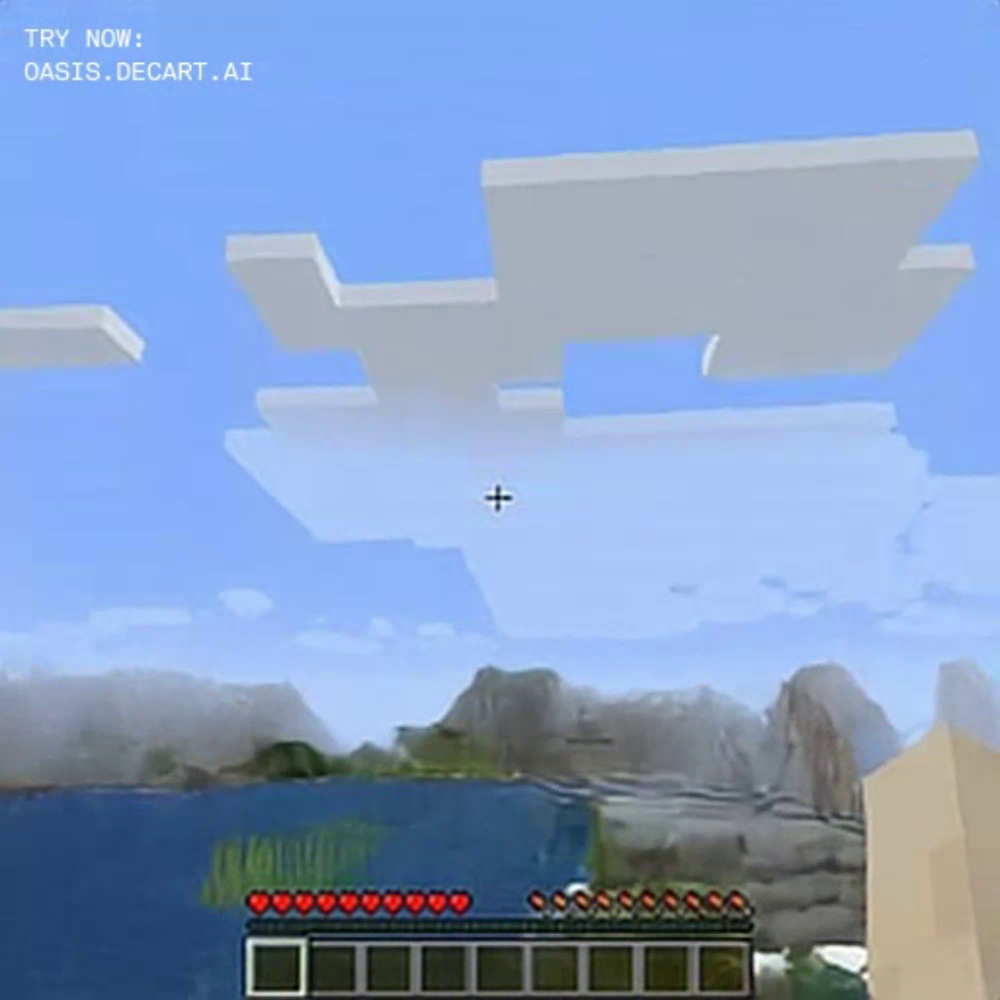

Pixels are a poor choice for encoding world state information
Within 3D environments, pixel observations provide partial, highly redundant, and viewpoint-dependent information about the world at a fixed point in time.
[Introduce 3D world state representation]
Information Loss
[Short explanation + Side-by-side comparison of Oasis and "with 3D state" (PERSIST)]
Without 3D state
Initial View

Revisit View

With 3D state
Initial View

Revisit View

Dynamics Oversimplification
[Short explanation + Side-by-side comparison of Oasis (web) avoiding modeling out-of-view objects and "with 3D state" (PERSIST)]
Poor Generalisation
[Short explanation + Side-by-side comparison of WorldMem (key frame retrieval) and "with 3D state" (PERSIST)]

 are predicted with a feed-forward transformer.
We then project the world to the camera plane to form a depth-ordered
stack of world latents
are predicted with a feed-forward transformer.
We then project the world to the camera plane to form a depth-ordered
stack of world latents
 .
Finally, pixel latents
.
Finally, pixel latents